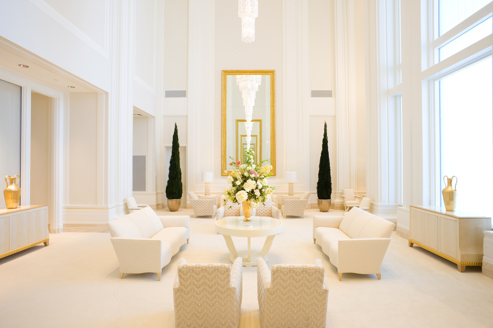

The Oquirrh Mountain Temple
The Oquirrh Mountain temple was first announced on October 1, 2005 by President Gordon B. Hinckley. This would be the fourth temple located in the southwest area of the Salt Lake Valley. The architecture for this temple was provided by Naylor Wentworth Lund Architects. The project manager was Russell S. Tanner. The contractor was Okland Construction Co.
Covering eleven acres, this temple has four ordinance rooms, six sealing rooms, a baptistry, and a celestial room. This temple serves members in 26 stakes across the west portion nof the Salt Lake Valley.
 The celestial room in the Oquirrh Mountain Temple.